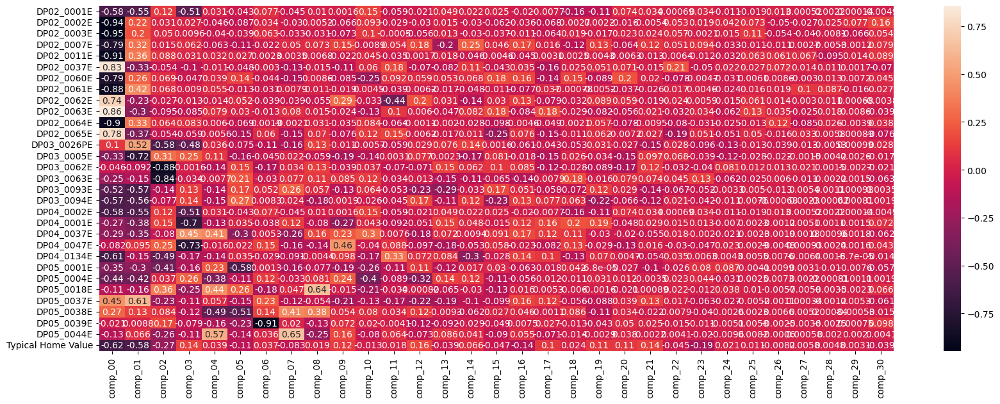
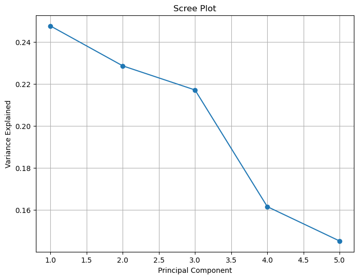
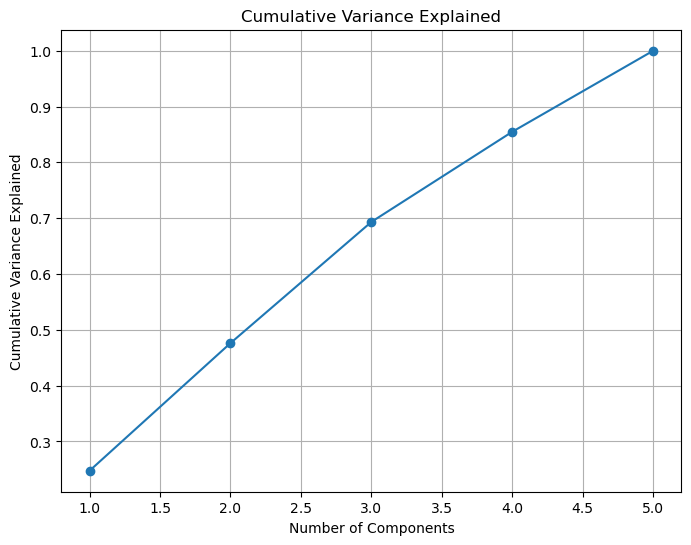
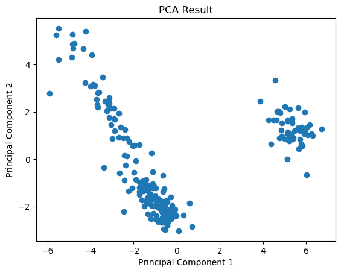

import pandas as pd
import numpy as np
import matplotlib.pyplot as plt
#from sklearn.decomposition import PCA
#from sklearn import preprocessing
from statsmodels.multivariate.pca import PCA
import seaborn as sns
from sklearn.manifold import TSNE
from sklearn.preprocessing import StandardScalerDimensionality Reduction
I start with dropping the year and state columns. Although my data already has standardized units being that it is the percent increae for a given year in a given state, I will still standardize if with mean zero and variance 1.
PCA
record=pd.read_csv('data/RecordData.csv')
record=record.drop(['Year','DP05_0073E','RegionName'],axis=1)
record.head()| DP02_0001E | DP02_0002E | DP02_0003E | DP02_0007E | DP02_0011E | DP02_0037E | DP02_0060E | DP02_0061E | DP02_0062E | DP02_0063E | ... | DP04_0047E | DP04_0134E | DP05_0001E | DP05_0004E | DP05_0018E | DP05_0037E | DP05_0038E | DP05_0039E | DP05_0044E | Typical Home Value | |
|---|---|---|---|---|---|---|---|---|---|---|---|---|---|---|---|---|---|---|---|---|---|
| 0 | 0.007341 | 0.009226 | -0.008186 | 0.090413 | 0.007228 | 0.004783 | 0.022710 | -0.002918 | 0.018174 | 0.033732 | ... | 0.007581 | 0.050667 | 0.002692 | 0.003198 | 0.010283 | -0.001775 | -0.000327 | -0.123824 | -0.027097 | 0.038688 |
| 1 | 0.022851 | -0.265678 | -0.360479 | -0.317095 | -0.802204 | 1.302990 | -0.588360 | -0.705200 | 0.439418 | 1.429793 | ... | -0.000968 | 0.024112 | 0.003133 | -0.006376 | 0.002545 | 0.005908 | 0.009572 | 0.054480 | 0.015884 | 0.070360 |
| 2 | 0.036880 | 0.013836 | 0.056032 | -0.010988 | 0.081890 | -0.050374 | -0.025077 | -0.044056 | 0.038532 | 0.007408 | ... | -0.004602 | 0.066914 | 0.027878 | 0.008556 | 0.010152 | -0.013376 | -0.010947 | 0.067268 | 0.040587 | 0.263465 |
| 3 | 0.024848 | 0.041137 | 0.053954 | -0.058821 | 0.009307 | 0.106362 | -0.070979 | -0.062720 | -0.020504 | 0.014854 | ... | 0.017788 | 0.060395 | 0.006829 | -0.001060 | -0.005025 | 0.006291 | -0.002353 | -0.017318 | 0.146484 | 0.076587 |
| 4 | 0.015195 | 0.000753 | -0.043082 | -0.078405 | 0.043289 | 0.942898 | -0.208181 | 0.031255 | 0.017837 | -0.065209 | ... | -0.043262 | -0.019983 | -0.003186 | -0.009174 | 0.011594 | -0.000634 | 0.139775 | 0.012942 | -0.060828 | 0.005789 |
5 rows × 31 columns
pca=PCA(record,standardize=True,method='eig')
components=pca.factors
loadings=pca.loadingspcFeats=pd.concat([record,components],axis=1)
correlation=pcFeats.corr()
correlation=correlation[:-len(components.columns)].loc[:,'comp_00':]fig, ax = plt.subplots(figsize=(20, 7))
sns.heatmap(correlation,annot=True)
plt.show()
This shows us what features are correlated with the first principle component, and what features will change together. For example,the there is a high negative correlation between the first principle component and percent change of married couple household and married couple household with children under 18 years old. So, you could say that as the percent change of married couple households decrease, so does the percent change of married couple households with children, which makes a lot of sense. There are definitley a lot if redundant variables in my data set.
print(loadings) comp_00 comp_01 comp_02 comp_03 comp_04 \
DP02_0001E -0.175673 -0.260934 0.070020 -0.330321 0.027259
DP02_0002E -0.283868 0.105401 0.018154 0.017716 -0.040512
DP02_0003E -0.284526 0.094653 0.029675 0.006253 -0.035268
DP02_0007E -0.236327 0.149764 0.008690 0.040273 -0.055856
DP02_0011E -0.273940 0.169863 0.052025 0.020394 0.028655
DP02_0037E 0.250797 -0.157965 -0.031902 -0.065628 -0.009657
DP02_0060E -0.238710 0.124871 0.040811 -0.030827 0.034435
DP02_0061E -0.265593 0.199353 0.040195 0.005897 0.048563
DP02_0062E 0.223315 -0.110455 -0.015835 -0.008396 -0.011966
DP02_0063E 0.257404 -0.141931 -0.056427 -0.055480 0.069882
DP02_0064E -0.270798 0.155756 0.038109 0.054203 0.005297
DP02_0065E 0.235744 -0.177624 -0.032053 -0.038397 -0.004967
DP03_0026PE 0.030497 0.247655 -0.343971 -0.310877 0.032045
DP03_0005E -0.098648 -0.341029 0.183233 0.160816 0.097013
DP03_0062E -0.013931 -0.043643 -0.519426 -0.001028 -0.120330
DP03_0063E -0.074681 -0.070250 -0.495611 -0.022511 -0.006788
DP03_0093E -0.157299 -0.271912 -0.083721 0.083472 -0.120817
DP03_0094E -0.172684 -0.263518 -0.045605 0.094767 -0.129472
DP04_0002E -0.175673 -0.260934 0.070020 -0.330321 0.027259
DP04_0001E -0.082619 -0.179226 0.086781 -0.456429 -0.114964
DP04_0037E -0.086163 -0.165096 -0.047260 0.290934 0.364261
DP04_0047E -0.024761 0.045191 0.148211 -0.479756 -0.013818
DP04_0134E -0.183816 -0.072695 -0.288294 -0.108330 -0.123876
DP05_0001E -0.103842 -0.142063 -0.244697 -0.107060 0.202590
DP05_0004E -0.132783 -0.200126 0.021660 0.166849 -0.332730
DP05_0018E -0.034015 -0.076520 0.211249 -0.162799 0.390053
DP05_0037E 0.134786 0.287644 -0.136889 -0.071346 0.050285
DP05_0038E 0.080439 0.063633 0.049926 -0.075772 -0.433031
DP05_0039E -0.006403 0.004149 0.099576 -0.051469 -0.139063
DP05_0044E -0.037631 0.031163 -0.152046 -0.073497 0.500718
Typical Home Value -0.187299 -0.274977 -0.159673 0.089512 0.034835
comp_05 comp_06 comp_07 comp_08 comp_09 ... \
DP02_0001E -0.040148 0.075145 -0.046833 0.011248 0.001809 ...
DP02_0002E -0.080712 0.033228 -0.031057 0.005781 -0.076406 ...
DP02_0003E -0.036268 0.061253 -0.034064 -0.034185 -0.085316 ...
DP02_0007E -0.105859 -0.021156 0.051553 0.081713 0.173931 ...
DP02_0011E 0.025420 0.002279 0.003622 0.007610 -0.025463 ...
DP02_0037E -0.044956 -0.002948 -0.137766 -0.016426 -0.124180 ...
DP02_0060E 0.132372 -0.043001 -0.153155 0.009641 -0.098655 ...
DP02_0061E -0.012107 -0.030504 0.008204 0.012002 -0.022529 ...
DP02_0062E 0.048586 -0.037557 -0.040757 -0.060953 0.336051 ...
DP02_0063E 0.027604 -0.013072 0.082291 0.016647 -0.027430 ...
DP02_0064E -0.064334 0.001851 -0.002160 0.034315 -0.041135 ...
DP02_0065E -0.141765 0.058828 -0.154616 0.078077 -0.088818 ...
DP03_0026PE -0.070020 -0.104987 -0.164477 0.149459 -0.012756 ...
DP03_0005E -0.150539 -0.044295 0.022226 -0.065319 -0.223913 ...
DP03_0062E 0.137611 -0.162470 0.035140 0.142221 -0.045548 ...
DP03_0063E 0.197289 -0.028890 0.079475 0.119573 0.098823 ...
DP03_0093E 0.162843 0.050635 0.263325 0.063106 -0.150719 ...
DP03_0094E 0.251867 0.008135 0.025185 -0.197968 0.002177 ...
DP04_0002E -0.040148 0.075145 -0.046833 0.011248 0.001809 ...
DP04_0001E 0.032252 -0.036723 0.128623 -0.088945 -0.317764 ...
DP04_0037E -0.277007 0.005177 -0.264222 0.181549 0.262218 ...
DP04_0047E 0.020016 0.147603 -0.161734 -0.153842 0.535441 ...
DP04_0134E 0.032201 -0.028157 -0.094107 -0.004918 0.114581 ...
DP05_0001E -0.539182 0.001229 -0.167979 -0.085317 -0.217447 ...
DP05_0004E -0.104475 0.118259 -0.033703 0.090717 0.284869 ...
DP05_0018E 0.238673 -0.171392 0.048718 0.713402 -0.017492 ...
DP05_0037E -0.137006 0.228518 -0.122763 -0.060742 -0.242698 ...
DP05_0038E -0.476806 0.135446 0.422496 0.425822 0.063154 ...
DP05_0039E -0.209812 -0.890122 0.020722 -0.144965 0.083713 ...
DP05_0044E -0.125729 0.034839 0.675657 -0.283303 0.188327 ...
Typical Home Value -0.104476 0.036133 -0.085356 0.020754 0.136116 ...
comp_21 comp_22 comp_23 comp_24 comp_25 \
DP02_0001E 0.086021 0.001974 0.103495 -0.042613 -0.084438
DP02_0002E -0.013421 0.152611 0.058280 0.163945 0.328531
DP02_0003E 0.060703 0.162566 -0.006306 0.056707 0.510411
DP02_0007E 0.290511 0.145839 0.285446 -0.128483 -0.047777
DP02_0011E -0.032103 -0.018306 -0.036433 -0.123250 0.282639
DP02_0037E -0.036491 0.605567 -0.151392 0.086464 0.122004
DP02_0060E 0.049087 -0.223328 -0.014349 -0.118797 0.027416
DP02_0061E -0.065314 0.049644 0.013941 -0.094492 0.072203
DP02_0062E -0.047241 0.068195 0.017943 -0.058200 0.276777
DP02_0063E 0.052915 -0.090217 0.104327 -0.239978 0.581926
DP02_0064E -0.023656 -0.227225 -0.093293 -0.098457 -0.057858
DP02_0065E 0.066923 -0.529395 0.155805 -0.198965 0.225851
DP03_0026PE -0.379945 0.079839 -0.292998 -0.489637 -0.057052
DP03_0005E 0.243180 0.193134 -0.118721 -0.455295 -0.125096
DP03_0062E 0.300134 -0.091765 -0.122793 0.315851 0.055279
DP03_0063E 0.184137 0.127770 0.404671 -0.241168 -0.111049
DP03_0093E -0.337883 -0.190830 -0.156774 -0.012981 0.022424
DP03_0094E -0.298945 0.059973 -0.127368 -0.042096 0.034093
DP04_0002E 0.086021 0.001974 0.103495 -0.042613 -0.084438
DP04_0001E 0.073409 0.042672 0.039970 -0.027118 0.010358
DP04_0037E -0.136699 0.052430 -0.006233 -0.083239 -0.010312
DP04_0047E 0.039974 -0.084737 -0.143255 0.087494 0.013129
DP04_0134E -0.135625 0.101271 0.019046 0.016656 0.024662
DP05_0001E -0.248974 -0.072935 0.243300 0.339282 -0.018517
DP05_0004E -0.008677 0.065542 0.132470 -0.119601 0.011411
DP05_0018E 0.002218 0.061749 -0.037741 0.147313 0.045425
DP05_0037E 0.332069 0.048459 -0.191925 -0.106545 -0.023462
DP05_0038E -0.054520 0.022556 -0.121868 -0.010245 0.010500
DP05_0039E 0.063392 -0.043779 -0.034500 -0.019807 0.026121
DP05_0044E 0.005480 0.011765 -0.062200 -0.037147 0.037101
Typical Home Value 0.351269 -0.127117 -0.589759 0.083395 0.049646
comp_26 comp_27 comp_28 comp_29 comp_30
DP02_0001E 0.070044 0.003157 0.016282 0.001361 7.071068e-01
DP02_0002E -0.275362 -0.162082 0.178972 0.733650 3.539391e-14
DP02_0003E -0.293868 -0.243766 -0.058779 -0.629149 -1.885467e-14
DP02_0007E -0.058731 0.016213 -0.038071 -0.011142 2.788586e-16
DP02_0011E 0.336281 0.406032 -0.690091 0.133185 7.769155e-15
DP02_0037E 0.396062 0.081642 0.078956 0.016217 -1.885364e-15
DP02_0060E 0.046992 -0.018188 0.097591 0.069065 1.363749e-15
DP02_0061E 0.106112 0.620464 0.630055 -0.150121 -1.403494e-14
DP02_0062E 0.078619 0.017798 0.083083 0.006530 1.312863e-15
DP02_0063E 0.189481 -0.153294 0.132561 0.082196 5.393421e-15
DP02_0064E 0.640132 -0.510027 0.189253 -0.037810 -5.736818e-15
DP02_0065E -0.087846 0.198581 0.041950 0.008574 7.446230e-16
DP03_0026PE -0.211636 -0.076403 -0.038598 0.009450 2.132095e-15
DP03_0005E -0.118311 -0.008990 -0.030766 0.024546 9.500179e-16
DP03_0062E 0.070988 0.124192 0.010966 -0.026038 -1.273745e-15
DP03_0063E 0.032791 -0.064701 -0.015812 0.014171 -6.817600e-16
DP03_0093E -0.070983 0.032543 0.008149 0.009379 9.601526e-16
DP03_0094E -0.003720 0.013867 -0.004496 0.007744 4.844410e-16
DP04_0002E 0.070044 0.003157 0.016282 0.001361 -7.071068e-01
DP04_0001E -0.006838 0.030858 0.008175 0.014548 1.173076e-15
DP04_0037E -0.010496 0.010893 0.006981 0.017404 3.718116e-16
DP04_0047E -0.026359 0.005599 -0.017752 0.015277 1.210923e-15
DP04_0134E 0.041376 -0.038627 0.011291 -0.000829 -1.291657e-16
DP05_0001E 0.054454 0.018734 -0.074604 -0.072721 -2.829022e-15
DP05_0004E 0.039787 0.013295 -0.005899 -0.010252 -5.918665e-16
DP05_0018E -0.030998 -0.034845 -0.025063 -0.021620 4.702222e-16
DP05_0037E -0.006271 0.002065 -0.008771 0.050673 1.209045e-15
DP05_0038E 0.036131 0.031398 0.006097 -0.005079 -9.377536e-16
DP05_0039E -0.013638 -0.021549 -0.018325 0.007178 9.296459e-16
DP05_0044E -0.003283 0.003493 0.014631 0.018984 9.614065e-16
Typical Home Value -0.044707 0.035093 0.034431 0.029302 1.073314e-15
[31 rows x 31 columns]import numpy as np
import matplotlib.pyplot as plt
from sklearn.decomposition import PCA
np.random.seed(123)
data = np.random.randn(100, 5)
pca = PCA()
pca_result = pca.fit_transform(data)
plt.figure(figsize=(8, 6))
plt.plot(np.arange(1, len(pca.explained_variance_ratio_) + 1),
pca.explained_variance_ratio_, marker='o')
plt.xlabel('Principal Component')
plt.ylabel('Variance Explained')
plt.title('Scree Plot')
plt.grid(True)
plt.show()
cumulative_variance = np.cumsum(pca.explained_variance_ratio_)
plt.figure(figsize=(8, 6))
plt.plot(np.arange(1, len(cumulative_variance) + 1), cumulative_variance, marker='o')
plt.xlabel('Number of Components')
plt.ylabel('Cumulative Variance Explained')
plt.title('Cumulative Variance Explained')
plt.grid(True)
plt.show()

Optimal number of components explaining 95% variance: 5from sklearn.decomposition import PCA
from sklearn import preprocessingscaler=StandardScaler()
scaled=scaler.fit_transform(record)
pca = PCA(n_components=2)
result = pca.fit_transform(scaled)
resultdf=pd.DataFrame(data=result,columns=['PC1','PC2'])plt.scatter(resultdf['PC1'], resultdf['PC2'])
plt.xlabel('Principal Component 1')
plt.ylabel('Principal Component 2')
plt.title('PCA Result')
plt.show()
t-SNE
tsne = TSNE(n_components=2, verbose=1, perplexity=40, n_iter=300)
tsne_results = tsne.fit_transform(scaled)[t-SNE] Computing 121 nearest neighbors...
[t-SNE] Indexed 204 samples in 0.001s...
[t-SNE] Computed neighbors for 204 samples in 0.411s...
[t-SNE] Computed conditional probabilities for sample 204 / 204
[t-SNE] Mean sigma: 2.276934
[t-SNE] KL divergence after 250 iterations with early exaggeration: 45.974541
[t-SNE] KL divergence after 300 iterations: 0.267783import plotly.express as px
tsne = TSNE(n_components=2, random_state=42)
tsne_result = tsne.fit_transform(scaled)
tsne_df = pd.DataFrame(data=tsne_result, columns=['TSNE1', 'TSNE2'])fig = px.scatter(tsne_df, x='TSNE1', y='TSNE2', title='t-SNE')
fig.show()Unable to display output for mime type(s): application/vnd.plotly.v1+jsonEvaluation and Comparison
PCA utilizes a linear approach, preserving the overall structure of data but may encounter challenges with non-linear relationships and sensitivity to outliers. It is computationally efficient and interpretable, making it well-suited for handling substantial datasets.
t-SNE is a non-linear technique that excels in capturing local structures and intricate patterns. However, it comes with increased computational demands and sensitivity to hyperparameters. T-SNE is better tailored for smaller datasets.
The choice between PCA and t-SNE depends on factors such as data linearity, available computational resources, interpretability requirements, and the desired level of detail in visualization. PCA is commonly used initially for gaining global insights, while t-SNE is applied when a more intricate, non-linear exploration is warranted.